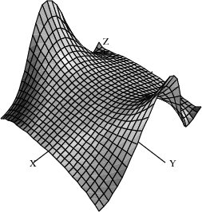

8.1 Numeric Functions¶
FriCAS provides two basic floating-point types: Float and DoubleFloat. This section describes how to use numerical function:numeric operations defined on these types and the related complex types. numeric operations
As we mentioned in Chapter ugIntro , the Float type is a software implementation of floating-point numbers in which the exponent and the floating-point number significand may have any number of digits. number:floating-point See FloatXmpPage for detailed information about this domain. The DoubleFloat (see DoubleFloatXmpPage ) is usually a hardware implementation of floating point numbers, corresponding to machine double precision. The types Complex Float and Complex DoubleFloat are floating-point number:complex the corresponding software implementations of complex floating-point numbers. complex:floating-point number In this section the term floating-point type means any of these number:complex floating-point four types.
The floating-point types implement the basic elementary functions. These include (where $ means DoubleFloat, Float, Complex DoubleFloat, or Complex Float):
The handling of roots depends on whether the floating-point type root:numeric approximation is real or complex: for the real floating-point types, DoubleFloat and Float, if a real root exists the one with the same sign as the radicand is returned; for the complex floating-point types, the principal value is returned. principal value Also, for real floating-point types the inverse functions produce errors if the results are not real. This includes cases such as asin(1.2), log(-3.2), sqrt(-1.1).
The default floating-point type is Float so to evaluate functions using Float or Complex Float, just use normal decimal notation.
exp(3.1)
| 22.197951281441633405 |
Type: Float
exp(3.1 + 4.5 * %i)
| -4.6792348860969899118-21.699165928071731864i |
Type: Complex Float
To evaluate functions using DoubleFloat or Complex DoubleFloat, a declaration or conversion is required.
r: DFLOAT := 3.1; t: DFLOAT := 4.5; exp(r + t*%i)
| -4.6792348860969906-21.699165928071732i |
Type: Complex DoubleFloat
exp(3.1::DFLOAT + 4.5::DFLOAT * %i)
| -4.6792348860969906-21.699165928071732i |
Type: Complex DoubleFloat
A number of special functions are provided by the package DoubleFloatSpecialFunctions for the machine-precision special functions floating-point types. DoubleFloatSpecialFunctions The special functions provided are listed below, where F stands for the types DoubleFloat and Complex DoubleFloat. The real versions of the functions yield an error if the result is not real. function:special
Euler:gamma function Γ(z)=∫0∞tz-1e-tdt.
defined by Euler:Beta function B(u,v)=∫01tu-1(1-t)v-1dt. This is related to Γ(z) by B(u,v)=Γ(u)Γ(v)Γ(u+v).
computed even if Γ(z) cannot.
function:digamma defined by ψ(z)=Γ′(z)Γ(z)
written ψ(n)(z).
function:Bessel Jμ(z). This function satisfies the differential equation z2w′′(z)+zw′(z)+(z2-μ2)w(z)=0.
function:Bessel Yμ(z). This function satisfies the same differential equation as besselJ. The implementation simply uses the relation Yμ(z)=Jμ(z)cos(μπ)-J-μ(z)sin(μπ)Jμ(z)cos(μπ)-J-μ(z)sin(μπ).
function:Bessel Iμ(z). This function satisfies the differential equation z2w′′(z)+zw′(z)-(z2+μ2)w(z)=0.
function:Bessel Kμ(z). This function satisfies the same differential equation as besselI. Bessel function The implementation simply uses the relation Kμ(z)=πI-μ(z)-Iμ(z)2sin(μπ)I-μ(z)-Iμ(z)2sin(μπ).
satisfies the differential equation w′′(z)-zw(z)=0. The implementation simply uses the relation Ai(-z)=1313z(J-1/3(2323z3/2)+J1/3(2323z3/2)).
satisfies the same differential equation as airyAi. Airy function The implementation simply uses the relation Bi(-z)=13133z(J-1/3(2323z3/2)-J1/3(2323z3/2)).
function:hypergeometric F10(;c;z).
The above special functions are defined only for small floating-point types. If you give Float arguments, they are converted to DoubleFloat by FriCAS.
Gamma(0.5)^2
| 3.14159265358979 |
Type: DoubleFloat
a := 2.1; b := 1.1; besselI(a + %i*b, b*a + 1)
| 2.489481690673867-2.365846713181643i |
Type: Complex DoubleFloat
A number of additional operations may be used to compute numerical values. These are special polynomial functions that can be evaluated for values in any commutative ring R, and in particular for values in any floating-point type. The following operations are provided by the package OrthogonalPolynomialFunctions: OrthogonalPolynomialFunctions
Tn(z). These are defined by 1-tz1-2tz+t2=∑n=0∞Tn(z)tn.
Un(z). These are defined by 11-2tz+t2=∑n=0∞Un(z)tn.
defined by e2tz-t2=∑n=0∞Hn(z)tnn!.
defined by e-tz1-t1-t=∑n=0∞Ln(z)tnn!.
is the m-th derivative of Ln(z).
defined by 11-2tz+t2=∑n=0∞Pn(z)tn.
These operations require non-negative integers for the indices, but otherwise the argument can be given as desired.
[chebyshevT(i, z) for i in 0..5]
| [1,z,2z2-1,4z3-3z,8z4-8z2+1,16z5-20z3+5z] |
Type: List Polynomial Integer
The expression chebyshevT(n,z) evaluates to the n-th Chebyshev polynomial:Chebyshev:of the first kind polynomial of the first kind.
chebyshevT(3, 5.0 + 6.0*%i)
| -1675.0+918.0i |
Type: Complex Float
chebyshevT(3, 5.0::DoubleFloat)
| 485.0 |
Type: DoubleFloat
The expression chebyshevU(n,z) evaluates to the n-th Chebyshev polynomial:Chebyshev:of the second kind polynomial of the second kind.
[chebyshevU(i, z) for i in 0..5]
| [1,2z,4z2-1,8z3-4z,16z4-12z2+1,32z5-32z3+6z] |
Type: List Polynomial Integer
chebyshevU(3, 0.2)
| -0.736 |
Type: Float
The expression hermiteH(n,z) evaluates to the n-th Hermite polynomial:Hermite polynomial.
[hermiteH(i, z) for i in 0..5]
| [1,2z,4z2-2,8z3-12z,16z4-48z2+12,32z5-160z3+120z] |
Type: List Polynomial Integer
hermiteH(100, 1.0)
| -0.1448706729337934088E93 |
Type: Float
The expression laguerreL(n,z) evaluates to the n-th Laguerre polynomial:Laguerre polynomial.
[laguerreL(i, z) for i in 0..4]
| [1,-z+1,z2-4z+2,-z3+9z2-18z+6,z4-16z3+72z2-96z+24] |
Type: List Polynomial Integer
laguerreL(4, 1.2)
| -13.0944 |
Type: Float
[laguerreL(j, 3, z) for j in 0..4]
| [-z3+9z2-18z+6,-3z2+18z-18,-6z+18,-6,0] |
Type: List Polynomial Integer
laguerreL(1, 3, 2.1)
| 6.57 |
Type: Float
The expression polynomial:Legendre legendreP(n,z) evaluates to the n-th Legendre polynomial,
[legendreP(i,z) for i in 0..5]
| [1,z,32z2-12,52z3-32z,358z4-154z2+38,638z5-354z3+158z] |
Type: List Polynomial Fraction Integer
legendreP(3, 3.0*%i)
| -72.0i |
Type: Complex Float
Finally, three number-theoretic polynomial operations may be evaluated. number theory The following operations are provided by the package NumberTheoreticPolynomialFunctions. NumberTheoreticPolynomialFunctions.
polynomial:Bernoulli Bn(z). These are defined by teztet-1=∑n=0∞Bn(z)tnn!.
These are defined by polynomial:Euler 2eztet+1=∑n=0∞En(z)tnn!.
polynomial whose roots are precisely the primitive n-th roots of unity. Euler:totient function This polynomial has degree given by the Euler totient function function:totient .
The expression bernoulliB(n,z) evaluates to the n-th Bernoulli polynomial:Bernouilli polynomial.
bernoulliB(3, z)
| z3-32z2+12z |
Type: Polynomial Fraction Integer
bernoulliB(3, 0.7 + 0.4 * %i)
| -0.138-0.116i |
Type: Complex Float
The expression polynomial:Euler eulerE(n,z) evaluates to the n-th Euler polynomial.
eulerE(3, z)
| z3-32z2+14 |
Type: Polynomial Fraction Integer
eulerE(3, 0.7 + 0.4 * %i)
| -0.238-0.316i |
Type: Complex Float
The expression polynomial:cyclotomic cyclotomic(n,z) evaluates to the n-th cyclotomic polynomial. cyclotomic polynomial
cyclotomic(3, z)
| z2+z+1 |
Type: Polynomial Integer
cyclotomic(3, (-1.0 + 0.0 * %i)^(2/3))
| 0.0 |
Type: Complex Float
Drawing complex functions in FriCAS is presently somewhat awkward compared to drawing real functions. It is necessary to use the draw operations that operate on functions rather than expressions.
This is the complex exponential function (rotated interactively). function:complex exponential When this is displayed in color, the height is the value of the real part of the function and the color is the imaginary part. Red indicates large negative imaginary values, green indicates imaginary values near zero and blue/violet indicates large positive imaginary values.
draw((x,y)+-> real exp complex(x,y), -2..2, -2*%pi..2*%pi, colorFunction == (x, y) +-> imag exp complex(x,y), title==”exp(x+%i*y)”, style==”smooth”)

This is the complex arctangent function. function:complex arctangent Again, the height is the real part of the function value but here the color indicates the function value’s phase. The position of the branch cuts are clearly visible and one can see that the function is real only for a real argument.
vp := draw((x,y) +-> real atan complex(x,y), -%pi..%pi, -%pi..%pi, colorFunction==(x,y) +->argument atan complex(x,y), title==”atan(x+%i*y)”, style==”shade”); rotate(vp,-160,-45); vp
This is the complex Gamma function.
draw((x,y) +-> max(min(real Gamma complex(x,y),4),-4), -%pi..%pi, -%pi..%pi, style==”shade”, colorFunction == (x,y) +-> argument Gamma complex(x,y), title == “Gamma(x+%i*y)”, var1Steps == 50, var2Steps== 50)
This shows the real Beta function near the origin.
draw(Beta(x,y)/100, x=-1.6..1.7, y = -1.6..1.7, style==”shade”, title==”Beta(x,y)”, var1Steps==40, var2Steps==40)
This is the Bessel function for index in the range -6..4 and argument x in the range 2..14.
draw((alpha,x) +-> min(max(besselJ(alpha, x+8), -6), 6), -6..4, -6..6, title==”besselJ(alpha,x)”, style==”shade”, var1Steps==40, var2Steps==40)
This is the modified Bessel function evaluated for various real values of the index and fixed argument x=5.
draw(besselI(alpha, 5), alpha = -12..12, unit==[5,20])
This is similar to the last example except the index takes on complex values in a 6x6 rectangle centered on the origin.
draw((x,y) +-> real besselI(complex(x/20, y/20),5), -60..60, -60..60, colorFunction == (x,y)+-> argument besselI(complex(x/20,y/20),5), title==”besselI(x+i*y,5)”, style==”shade”)